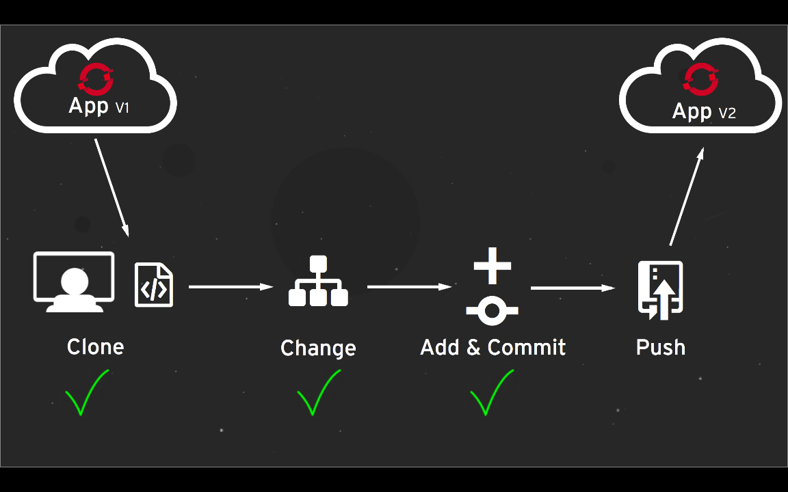
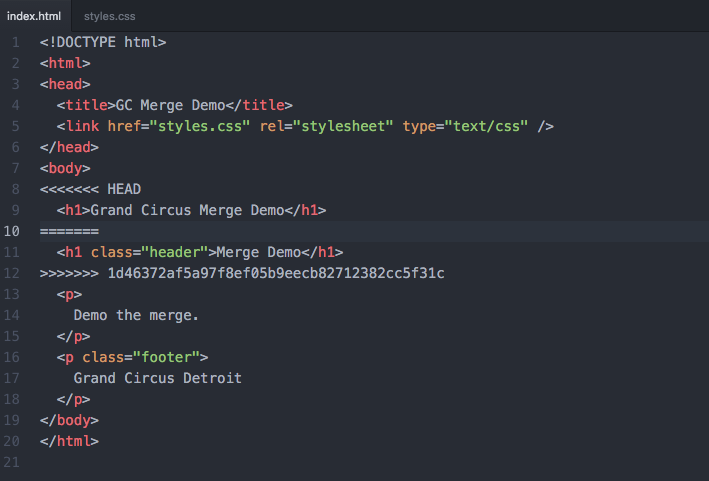
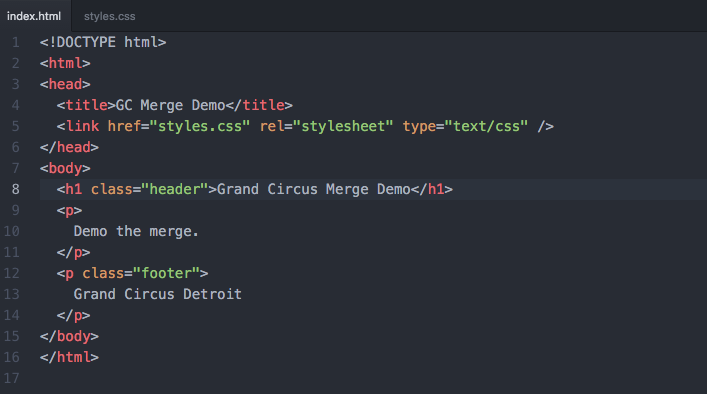
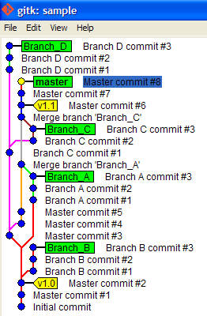

Introduction to Git
Git? Github?
Same? Different?
Git is a version control system for tracking changes in computer files and coordinating work on those files among multiple people. ~wikipedia
GitHub is a web-based Git...It offers all of the distributed version control and source code management (SCM) functionality of Git as well as adding its own features. ~wikipedia
Version Control? Why?
- revert files back to a previous state
- revert the entire project back to a previous state
- compare changes over time
- see who last modified something
- backup files
Getting started
create a new repository
$ git init
$ git initcheckout a repository
$ git clone
username@host:/path/to/repo
$ git clone
username@host:/path/to/repoWorkflow

Working Directory
Staging
Repo
Add
add file(s) from working directory to staging
$ git add <filename>
$ git add <filename>$ git add *
$ git add *Commit
commit file(s) from staging to local repository
$ git commit -m "Commit message"
$ git commit -m "Commit message"Pushing changes
push changes to remote repository
$ git push origin master
$ git push origin master
Photo openshift.com
Branching
used to develop features isolated from each other

$ git checkout -b feature_x
$ git checkout -b feature_xupdate
$ git pull
$ git pullmerge
$ git merge <branch>
$ git merge <branch>merge conflicts
merge conflicts resolved

Photo githubusercontent.com